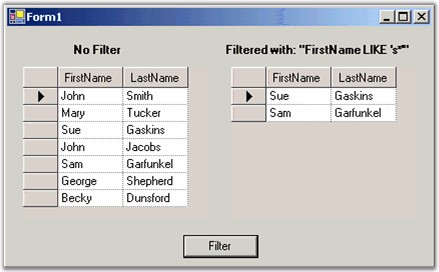
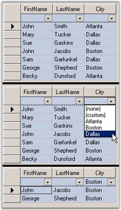

We will use an example to illustrate the filtering procedure for the grid.
Assume that you are binding a grid to a DataTable. In this case, you will have to use the DataView.RowFilter property to restrict the rows that appear in your Grid Data Bound Grid. The syntax for the RowFilter clause is very similar to the SQL WHERE clause. You will be able to see a full description of this in the .NET Frameworks online help for the DataColumn.Expression, which uses the same syntax.
Here are some samples.
|
RowFilter String |
Result |
|
[City Area] = Center |
Shows only rows where the City Area column is center. |
|
rate > 10 |
Shows only rows where the rate column is greater than 10. |
|
Name LIKE a* |
Shows only rows where the Name column begins with *a. |
|
Name LIKE *a |
Shows only rows where the Name column ends with *a. |

Figure 208: Grid on Right is Filtered Version of Grid on Left
The filtered grid is created by setting the RowFilter property of it to default view. If you change the RowFilter property then the grid's contents will change to reflect the new filter.
|
[C#]
// Assuming the grid is bound to a Data Table. DataView dv = ((DataTable)this.gridDataBoundGrid1.DataSource).DefaultView; dv.RowFilter = "FirstName LIKE 's*'"; |
|
[VB.NET]
' Assuming the grid is bound to a Data Table. Dim dv As DataView = CType(Me.gridDataBoundGrid1.DataSource, DataTable).DefaultView dv.RowFilter = "FirstName LIKE 's*'" |
You can use the Essential Grid's GridFilterBar class to automatically add a row of drop-down cells at the top of a simple (non-hierarchical) Grid Data Bound Grid that can be used to filter the grid to display only rows that match values from the drop-down. For example, when you have a grid with a Grid Filter Bar, if one of your columns is City and you want to see all the rows where City is 'Boston' for example and then you will have to drop the combo box at the top of the City column, and select Boston. The grid will then display only those rows with Boston in the City column. Adding a Grid Filter Bar takes only two lines of code.
|
[C#]
// Add a Filter Bar to the data bound grid. GridFilterBar filterBar = new Syncfusion.Windows.Forms.Grid.GridFilterBar(); filterBar.WireGrid(gridDataBoundGrid1); |
|
[VB.NET]
' Add a Filter Bar to the data bound grid. Dim filterBar As GridFilterBar = New Syncfusion.Windows.Forms.Grid.GridFilterBar() filterBar.WireGrid(GridDataBoundGrid1) |

Figure 209: Top Grid is Before Grid Filter Bar; Middle Shows Selecting to Filter on City = Boston; Bottom Grid is Filtered Grid
Filter By DisplayMember
Grid Data Bound Grid filters the data records by the value member of the columns. This default behavior can be customized in order to accomplish filtering by display member instead. This can be achieved by deriving custom filter from the GridFilterBar class where in you can customize the GetFilterFromRow method to replace the display strings in the filter with the value strings.
The Filter By DisplayMember feature performs this sort of customization and lets you filter the grid data by display member instead of value member.
Following code example illustrates how to enable this filter.
|
[C#]
GridDataBoundGridFilterBarExt filterBar = new GridDataBoundGridFilterBarExt(); filterBar.WireGrid(gridDataBoundGrid1); |
|
[VB.NET]
Dim filterBar As GridDataBoundGridFilterBarExt = New GridDataBoundGridFilterBarExt() filterBar.WireGrid(gridDataBoundGrid1) |

Figure 210: Filtering Data Records in the Grid by the Display Member
 Note: For more details, refer the following
browser sample:
Note: For more details, refer the following
browser sample:
<Install Location>\Syncfusion\EssentialStudio\[Version Number]\Windows\Grid.Windows\Samples\2.0\Data Bound\Filter By DisplayMember Demo